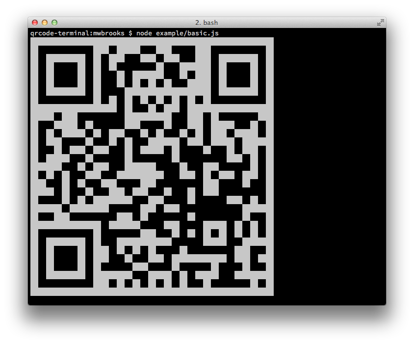
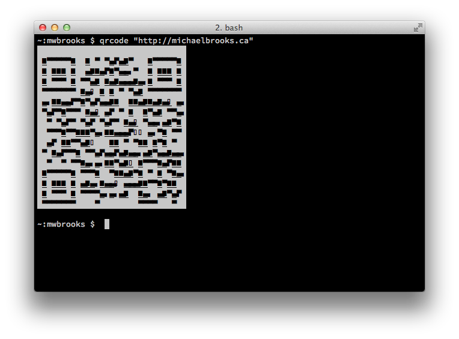

Overview
Have you ever wanted to display a QR code in the terminal using node? Probably not, but if your answer is yes then you'll be happy to know about qrcode-terminal!
qrcode-terminal is a tiny npm module that allows you to encode text as a QR code and render it to a UNIX-compatible terminal.
Usage
It looks something like this:

And has a very simple JavaScript interface:
// render QR code to the console
qrcode.generate('http://michaelbrooks.ca');
// return QR code as a string
qrcode.generate('http://michaelbrooks.ca', function (qrcode) {
console.log(qrcode);
});
And a command-line interface:
$ qrcode "http://michaelbrooks.ca"
Gotcha
One gotcha is that the size of the QR code is related to the amount of data encoded. For longer URLs, I recommend you use a URL shortener service, otherwise the QR code may be larger than the terminal screen!
Why
Gord Tanner and I created this library because there are no functional QR code libraries for node that can render to text or the terminal.
We needed the library for the PhoneGap/Build CLI. The library has to be lightweight, because we expect average users to be downloading and installing it. It also has to work on both Windows, OS X, and ideally Linux.
Alternatives
There are existing QR code libraries for node. Almost all of them will render to a Canvas object and at least one can render as text.
Text from Canvas
With the Canvas object, you can get a text representation of a QR code. This is done by rendering the canvas image to a 2D context, getting the image data from the context, and then converting each pixel value to the appropriate binary text value. But why would you want to do this? It requires the canvas npm module and does double duty processing by rendering the QR code twice - once as an image and once as text.
node-qrcode
There is also a rich QR code library for node called node-qrcode. However, the library is primarily focused on server-side rendering. It does have a client-side text rendering option, but I could not successfully scan the QR code on an iPhone, Android, or BlackBerry. Perhaps it's my terminal's font, but the user should be free to change their font.
Here is an example of node-qrcode rendering to the terminal:

Now, why not contributor back to node-qrcode? It's a heavy library with a compiled dependency (canvas). As I mentioned before, my project requires a light-weight library that works on both Windows and OS X.